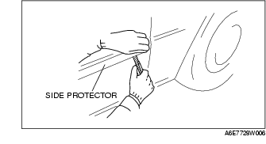

Side protector removal
1. Pry the side protector end 20-30 mm {0.8-1.1 in} using a flathead screwdriver or a razor.

- • The side protector is installed with double-sided adhesive tape. If the side protector is difficult to remove, warm the double-sided adhesive tape using a hot air blower.
2. Pull the side protector outward, then remove it from the body.